## execution abstraction | **processes** ## **operating systems** ### csci 3411 ### Prof. **Sibin Mohan** <br> _<font size="5"> acknowledgments: some content modified from Silberschatz et al. and West</font>_ --- previously, in operating systems... --- **system structure** - how is software _isolated_? - how does isolated software _communicate_? --- ### monolithic OSes - _minimal, essential_ isolation - applications isolated from each other --- ### monolithic OSes - _minimal, essential_ isolation - applications isolated from each other - core abstraction → **process** --- ### CPU / memory abstraction --- ### CPU / memory abstraction | **hardware** provides| | | --- | --- | | sequential execution | | | interrupts | | || --- ### CPU / memory abstraction | **hardware** provides| **OS** should abstract & provide| | --- | --- | | sequential execution | multiple "_flows_" of sequential execution <br> (different apps) | | interrupts || --- ### CPU / memory abstraction | **hardware** provides| **OS** should abstract & provide| | --- | --- | | sequential execution | multiple "_flows_" of sequential execution <br> (different apps) | | interrupts | each app its own memory _"space"_ | ||| --- ### CPU / memory abstraction | **hardware** provides| **OS** should abstract & provide| | --- | --- | | sequential execution | multiple "_flows_" of sequential execution <br> (different apps) | | interrupts | each app its own memory _"space"_ | | | **protection** between apps <br> → security & fault isolation | || --- ## processes --- a **program** is _passive_ --- a **program** is _passive_ - a collection of code + data, kept in a file - what you see in <scb>ls</scb> --- |a **program** is _passive_|a **process** is _active_| |:------------------------:|:-----------------------:| | <ul> <li>collection of code+data, in a file </li> <li>what you see in <scb>ls</scb></li> </ul>| <ul><li>a **loaded, running** program </li> <li>what you see in <scb>ps</scb></li></ul>| || --- ### a UNIX **process** includes... --- ### a UNIX **process** includes... 1. registers <br> (instruction counter, stack pointer, ...) --- ### a UNIX **process** includes... 1. registers <br> (instruction counter, stack pointer, ...) 2. an execution **stack** --- ### a UNIX **process** includes... 1. registers <br> (instruction counter, stack pointer, ...) 2. an execution **stack** 3. a **heap** --- ### a UNIX **process** includes... 1. registers <br> (instruction counter, stack pointer, ...) 2. an execution **stack** 3. a **heap** 4. **data** & **text** (code) segments --- ### a UNIX **process** includes... <div class="multicolumn" style="display: grid; grid-template-columns: 60% 40%; gap: 20px; align-items: center;"> <div> 1. registers <br> (instruction counter, stack pointer, ...) 2. an execution **stack** 3. a **heap** 4. **data** & **text** (code) segments </div> <div> <p>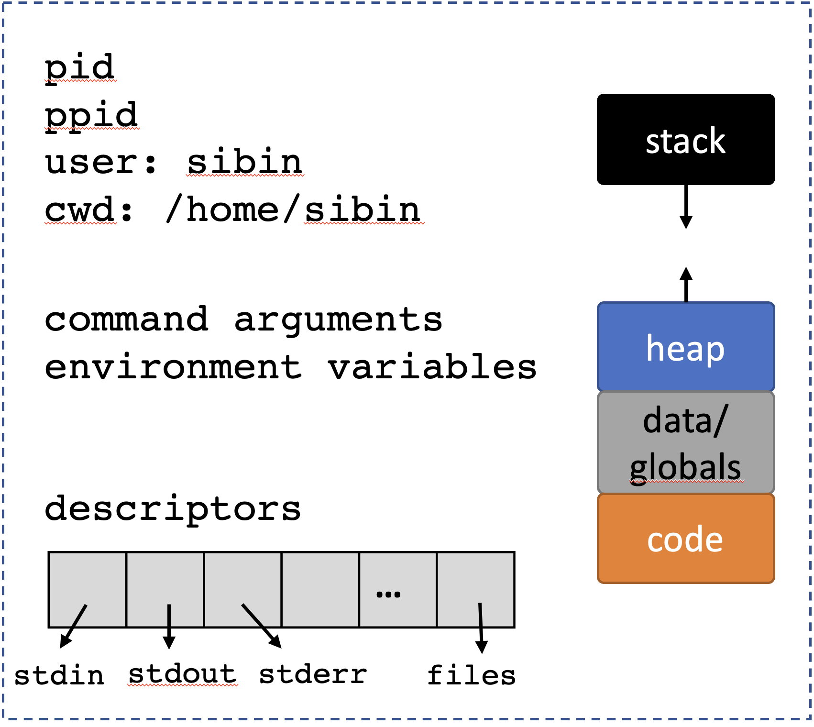</p> </div> </div> --- ### program → process how does a passive program _become_ a running process? --- ### program → process how does a passive program _become_ a running process? <p>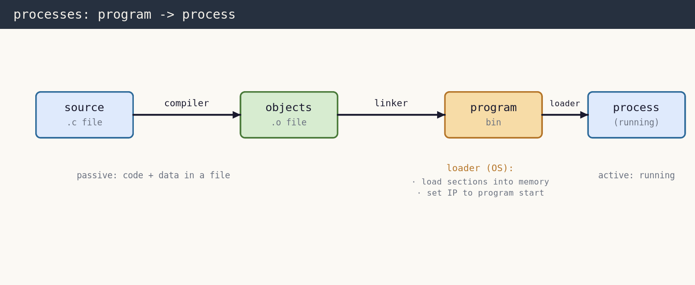</p> --- **loader** (OS) sets it running - loads sections - sets <scb>IP</scb> to the start Note: - objdump shows the sections of a program; the loader maps them into memory. --- ## process in memory --- ### process in memory | **see it yourself** consider a program that prints the address of - a <sc>local</sc>, a <sc>malloc</sc>, a <sc>global</sc> and a <sc>function</sc> --- ### process in memory | **see it yourself** - a <sc>local</sc>, a <sc>malloc</sc>, a <sc>global</sc> and a <sc>function</sc> <p>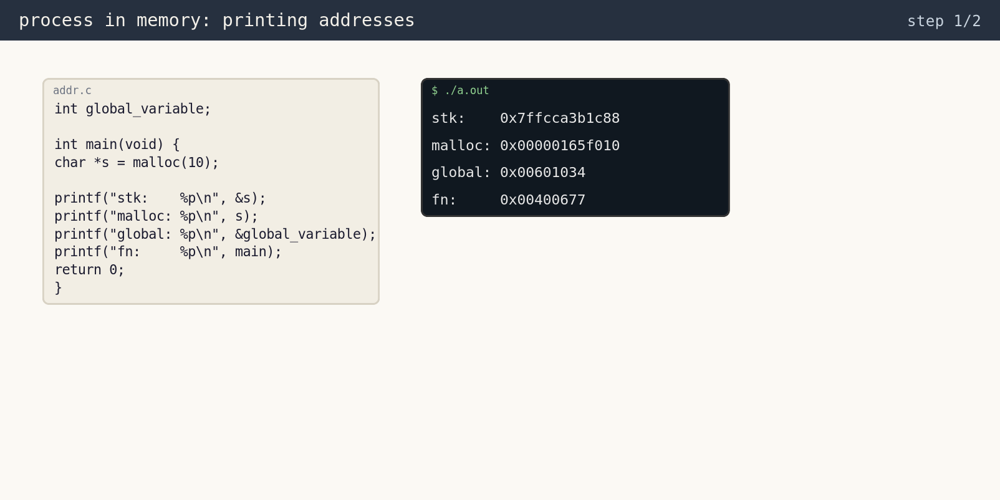</p> --- ### process in memory | **see it yourself** each address lands in a _different region_ → stack high, text low <p>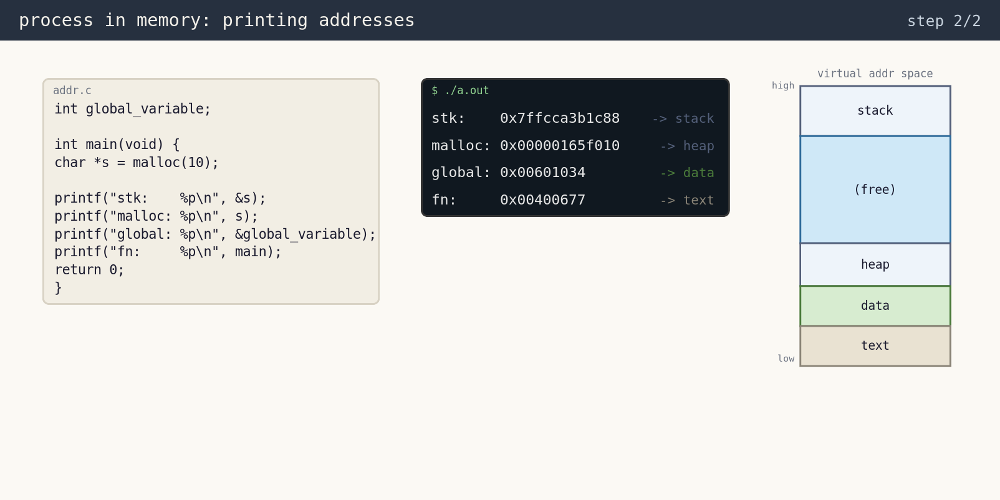</p> Note: - &s on the stack; s (malloc) in the heap; global in data; main in text --- ### process in memory a process' memory → the **virtual address space** (VAS) <p>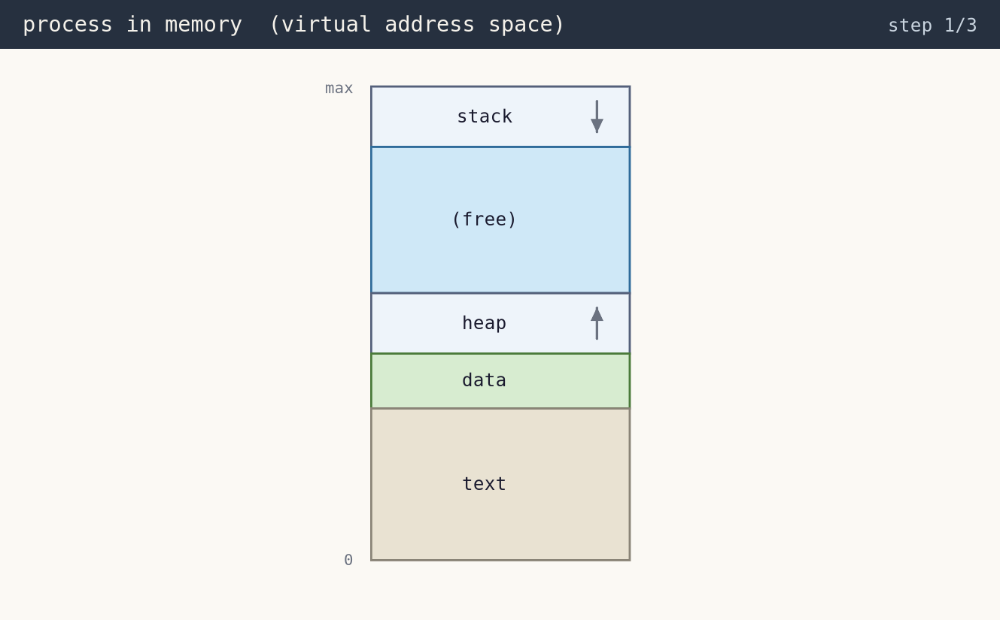</p> --- let's look at `code` example --- ```C [6|10|12-15|17|19] #include <stdio.h> #include <stdlib.h> #include <sys/types.h> #include <unistd.h> int global_variable; int main() { char *s = malloc(10); printf("stk: %p\n", &s); printf("malloc: %p\n", s); printf("global: %p\n", &global_variable); printf("fn: %p\n", main); printf("pid: %d\n", getpid()); getc( stdin ) ; return 0; } ``` --- ```C #include <stdio.h> #include <stdlib.h> #include <sys/types.h> #include <unistd.h> int global_variable; int main() { char *s = malloc(10); printf("stk: %p\n", &s); printf("malloc: %p\n", s); printf("global: %p\n", &global_variable); printf("fn: %p\n", main); printf("pid: %d\n", getpid()); getc( stdin ) ; return 0; } ``` --- --- ### process in memory each process → has its own VAS <p>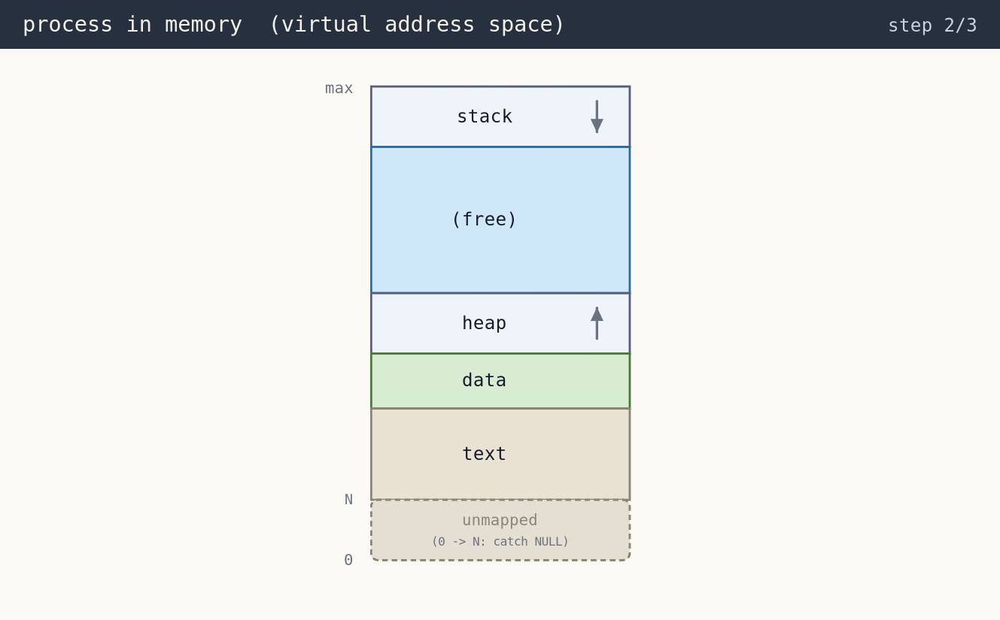</p> --- ### process in memory each process → has its own VAS process believes → it has **entire** memory available --- process believes → it has **entire** memory available - clearly not realistic - **OS abstraction** --- process believes → it has **entire** memory available - clearly not realistic - **OS abstraction** - protection between processes - only **subset** of memory → allocated - "as needed" --- ### process in memory there's a **hole** from <scb>0 → N</scb> of _inaccessible_ memory... **why?** --- ### process in memory there's a **hole** from <scb>0 → N</scb> of _inaccessible_ memory... **why?** unmapped low addresses → catch <scb>NULL</scb>-pointer dereferences --- ### process in memory there's a **hole** from <scb>0 → N</scb> of _inaccessible_ memory... **why?** unmapped low addresses → catch <scb>NULL</scb>-pointer dereferences question: why it is a **range** (<scb>0 → N</scb>) and not just <scb>0</scb>? --- ### process in memory also notice the "**free**" memory in the middle... --- ### process in memory also notice the "**free**" memory in the middle... **not** actual memory → access results in <scb>segfault</scb> memory for the heap/stack to "grow" into --- where is the **kernel** is this VAS? --- where is the **kernel** is this VAS? - separate address space? - how does **"dual-mode"** execution matter? - kernel "manages" the VAS? --- ### process in memory **kernel** → mapped into **<font color="darkred">every</font>** address space <p>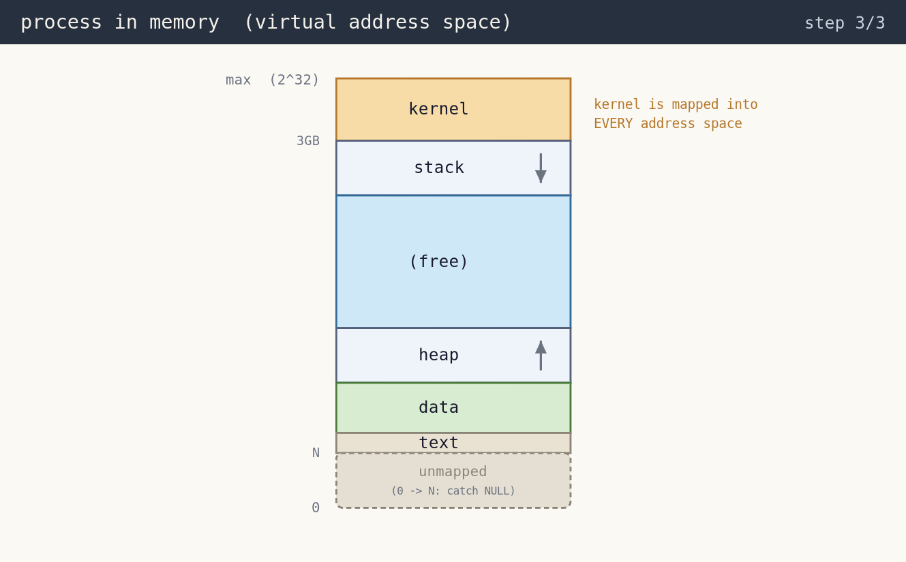</p> Note: - so a syscall can run without switching the address space -- same kernel memory. --- ## OS support for process memory --- ### OS support for process memory - OS uses **HW** → _virtual_ address space (VAS) --- ### OS support for process memory - OS uses **HW** → _virtual_ address space (VAS) - process believes → it has **entire** memory available - **OS abstraction!** --- ### OS support for process memory - OS uses **HW** → _virtual_ address space (VAS) - process believes → it has **entire** memory available - **OS abstraction!** - **protection** between processes --- ### OS support for process memory - OS uses **HW** → _virtual_ address space (VAS) - process believes → it has **entire** memory available - **OS abstraction!** - **protection** between processes - only **subset** of memory → allocated - "as needed" --- ## OS support for process memory | **a lie** --- ### OS support for process memory | **a lie** - every virtual address space → **lie** --- ### OS support for process memory | **a lie** - every virtual address space → **lie** - there **isn't that much physical** memory in system! --- ### OS support for process memory | **a lie** - every virtual address space → **lie** - there **isn't that much physical** memory in system! - OS maps _different_ real memory → each VAS --- ### OS support for process memory | **a lie** - every virtual address space → **lie** - there **isn't that much physical** memory in system! - OS maps _different_ real memory → each VAS - different physical memory - VASes **cannot touch each other** - **isolation** is the opposite of _sharing_ --- ### OS support for process memory | **the kernel** --- ### OS support for process memory | **the kernel** - kernel must **manage** virtual address spaces --- ### OS support for process memory | **the kernel** - kernel must **manage** virtual address spaces <br> <br> <center><div class="center" data-id="box" style="height: 75px; width: 200px; background: orange;"> <b>why?</b> </div></center> --- what if a **process** managed its own VAS? --- what if a **process** managed its own VAS? - it could map **kernel's** memory into itself → corrupt it! --- what if a **process** managed its own VAS? - it could map **kernel's** memory into itself → corrupt it! - it could map **another process'** memory into itself! --- what if a **process** managed its own VAS? - it could map **kernel's** memory into itself → corrupt it! - it could map **another process'** memory into itself! <br> <br> ### the kernel **must** be the one in control --- ### OS support for process memory | **the kernel** - kernel **manages** virtual address spaces --- ### OS support for process memory | **the kernel** - kernel **manages** virtual address spaces - create mappings: virtual & → actual memory --- ### OS support for process memory | **the kernel** - kernel **manages** virtual address spaces - create mappings: virtual & → actual memory - switch between apps ↔ switch between _VAS_ --- so... where does a <sc>syscall</sc> execute? Note: - blue pill: switching AS keeps the *same* kernel memory mapped. --- ### **where** is the kernel? --- ### **where** is the kernel? | **EVERYWHERE**! **kernel** → mapped into **<font color="darkred">every</font>** address space --- Note: - so a syscall can run without switching the address space -- same kernel memory. --- ### where is the kernel? | **two questions** --- ### where is the kernel? | **two questions** <div class="multicolumn" style="display: grid; grid-template-columns: 60% 40%; gap: 20px; align-items: center;"> <div> 1. **no separate** address space for kernel? </div> <div> </div> </div> --- ### where is the kernel? | **two questions** <div class="multicolumn" style="display: grid; grid-template-columns: 60% 40%; gap: 20px; align-items: center;"> <div> 1. **no separate** address space for kernel? 2. if it's in **every** VAS <br> → how is kernel **protected**? </div> <div> </div> </div> --- --- <sc>syscall</sc>/<sc>interrupt</sc>/<sc>exception</sc> --- <sc>syscall</sc>/<sc>interrupt</sc>/<sc>exception</sc> <br> <center><div class="center" data-id="box" style="height: 75px; width: 850px; background: orange;"> <b>does not switch address space!</b> </div></center> --- <sc>syscall</sc>/<sc>interrupt</sc>/<sc>exception</sc> - flips the **mode bit** + jumps to **preset address** --- <sc>syscall</sc>/<sc>interrupt</sc>/<sc>exception</sc> - flips the **mode bit** + jumps to **preset address** - kernel _must_ be mapped into **same** VAS to be **reachable** --- ### where is the kernel? | **how it's protected** --- ### where is the kernel? | **how it's protected** - kernel memory is _marked_ **kernel-mode** --- ### where is the kernel? | **how it's protected** - kernel memory is _marked_ **kernel-mode** - user mode simply **cannot** touch it - else a fault (<scb>GPF</scb>/<scb>segfault</scb>) - dual-mode protection, again! --- ### where is the kernel? | **the neat trick** --- ### where is the kernel? | **the neat trick** the kernel is mapped **identically** into _every_ VAS --- ### where is the kernel? | **the neat trick** the kernel is mapped **identically** into _every_ VAS - so switchoing address spaces... --- ### where is the kernel? | **the neat trick** the kernel is mapped **identically** into _every_ VAS - so switching address spaces... - ...keeps executing the _same_ kernel code, **uninterrupted** --- ## process introspection --- ### process introspection Linux lets us _look inside_ --- ### process introspection Linux lets us _look inside_ → both the **program** and the **process** --- ### process introspection Linux lets us _look inside_ → both the **program** and the **process** |method|what you see| |-----|-----| | <scb>objdump</scb> | _sections_ of program (on disk) | --- ### process introspection Linux lets us _look inside_ → both the **program** and the **process** |method|what you see| |-----|-----| | <scb>objdump</scb> | **sections** of program (on disk) | | <scb>/proc/\<pid\>/maps</scb> | process **<font color="darkred">live</font> memory** | || --- ### introspection | **the program** (objdump) --- ### introspection | **the program** (objdump) ## <scb>objdump -h</scb> --- ### introspection | **the program** (objdump) <scb>objdump -h</scb> → each section **loads** into address space --- ### introspection | **the program** (objdump) <scb>objdump -h</scb> → each section **loads** into address space <p>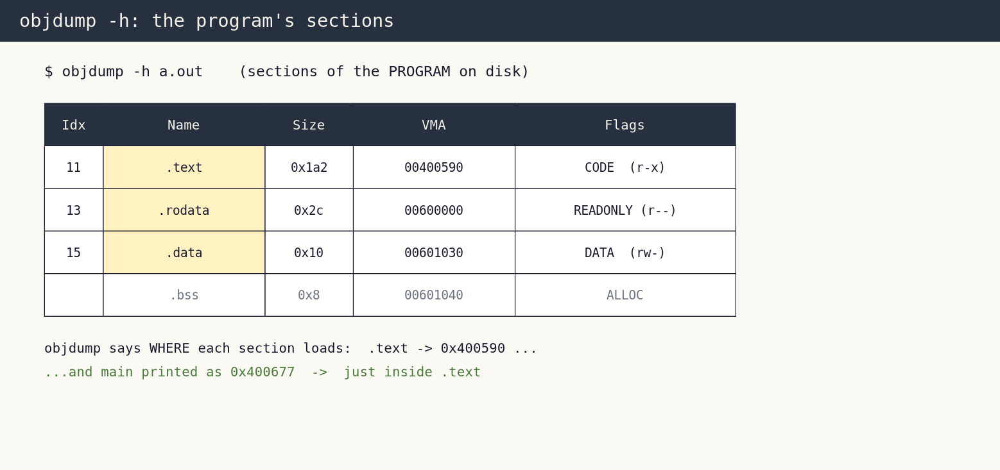</p> Note: - ELF section headers tell the loader where .text/.rodata/.data go. --- ### introspection | **the process** --- ### introspection | **the process** ## <scb>/proc/\<pid\>/maps</scb> --- ### introspection | **the process** <scb>/proc/\<pid\>/maps</scb> → mapped regions of **running** process --- ### introspection | **the process** <scb>/proc/\<pid\>/maps</scb> → mapped regions of **running** process <p>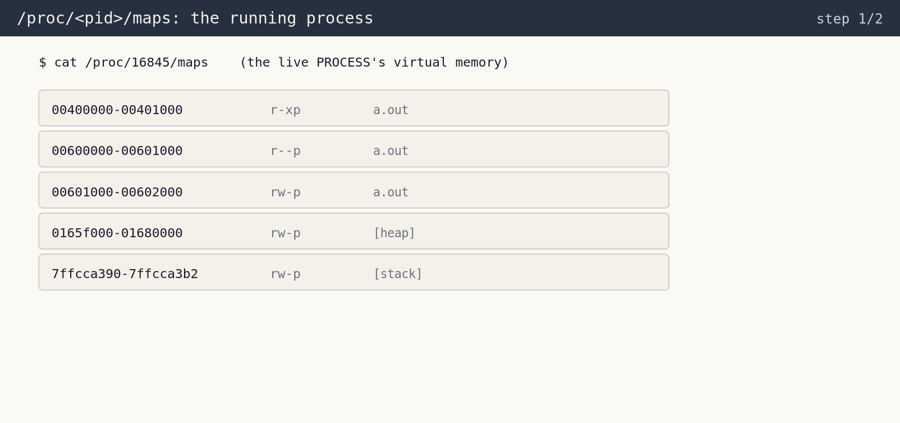</p> --- ### introspection | **the process** **permission bits** → tell you what each region _is_ --- ### introspection | **the process** **permission bits** → tell you what each region _is_ <p>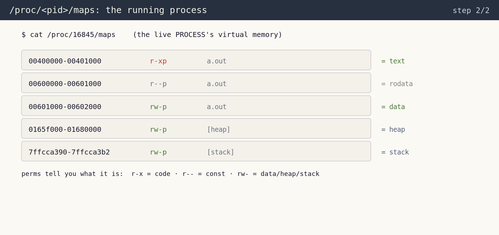</p> Note: - r-x = code, r-- = constants, rw- = data/heap/stack. --- ### <sc>/proc/[pid]/maps</sc> Permission Bits | position | character | access | description | | :---: | :---: | :--- | :--- | | **1** | <scb>r</scb> / <scb>-</scb> | **read** | <scb>r</scb> = readable, <scb>-</scb> = disabled | | **2** | <scb>w</scb> / <scb>-</scb> | **write** | <scb>w</scb> = writable, <scb>-</scb> = disabled | | **3** | <scb>x</scb> / <scb>-</scb> | **execute** | <scb>x</scb> = executable, <scb>-</scb> = disabled | --- ### <sc>/proc/[pid]/maps</sc> Permission Bits | position | character | access | description | | :---: | :---: | :--- | :--- | | **1** | <scb>r</scb> / <scb>-</scb> | **read** | <scb>r</scb> = readable, <scb>-</scb> = disabled | | **2** | <scb>w</scb> / <scb>-</scb> | **write** | <scb>w</scb> = writable, <scb>-</scb> = disabled | | **3** | <scb>x</scb> / <scb>-</scb> | **execute** | <scb>x</scb> = executable, <scb>-</scb> = disabled | | **4** | <scb>p</scb> / <scb>s</scb> | **sharing** | <scb>p</scb> = private*, <scb>s</scb> = shared | || <br> [* copy-on-write] --- ### common permission combinations | permissions | mode | usage / memory region | | :--- | :--- | :--- | | <scb>r-xp</scb> | read / execute <br> (private) | executable code segment <br> <scb>.text</scb> section of binaries/shared libraries | | <scb>rw-p</scb> | read / write <br> (private) | heap, stack, initialized/uninitialized globals <br> <scb>.data</scb>, <scb>.bss</scb>, <scb>malloc</scb> allocations | | <scb>r--p</scb> | read-only (private) | read-only constants <br> <scb>.rodata</scb>, dynamic linker tables | --- ### common permission combinations [contd.] | permissions | mode | usage / memory region | | :--- | :--- | :--- | | <scb>rw-s</scb> | read / write (shared) | shared memory <br> <scb>mmap</scb> with <scb>map_shared</scb>, posix shared memory, ipc | | <scb>---p</scb> | no access (private) | guard pages <br> _e.g.,_ stack guard pages, unreserved memory | || --- ## **GDB is just this** --- ## introspection | **GDB is just this** <scb>gdb</scb> is **implemented** on top of this introspection --- ## introspection | **GDB is just this** <scb>gdb</scb> is **implemented** on top of this introspection 1. read the <scb>/proc</scb> files for context --- ## introspection | **GDB is just this** <scb>gdb</scb> is **implemented** on top of this introspection 1. read the <scb>/proc</scb> files for context 2. a few <sc>syscall</sc> tricks around <scb>ptrace</scb> --- ## introspection | **GDB is just this** <scb>gdb</scb> is **implemented** on top of this introspection 1. read the <scb>/proc</scb> files for context 2. a few <sc>syscall</sc> tricks around <scb>ptrace</scb> <br> <br> **no magic** → just files + a <sc>syscall</sc> --- abstraction for execution in UNIX → **memory** + **flow of control** --- abstraction for execution in UNIX → **memory** + **flow of control** ...so how is process introspection **implemented**? --- ## process control block (PCB) --- ### process control block (PCB) a kernel, **per-process** data structure ## <scb>struct proc</scb> --- ## process control block (PCB) a kernel, **per-process** data structure → <scb>struct proc</scb> | holds |description | |-------|--| | **CPU registers** | including the instruction counter | --- ## process control block (PCB) a kernel, **per-process** data structure → <scb>struct proc</scb> | holds |description | |-------|--| | **CPU registers** | including the instruction counter | | **process state** | priority, awake/blocked | --- ## process control block (PCB) a kernel, **per-process** data structure → <scb>struct proc</scb> | holds |description | |-------|--| | **CPU registers** | including the instruction counter | | **process state** | priority, awake/blocked | | **memory info** | allocation, VAS mapping, stack location | --- ## process control block (PCB) a kernel, **per-process** data structure → <scb>struct proc</scb> | holds |description | |-------|--| | **CPU registers** | including the instruction counter | | **process state** | priority, awake/blocked | | **memory info** | allocation, VAS mapping, stack location | | **CPU accounting** | exec time at user/kernel level | --- ## process control block (PCB) a kernel, **per-process** data structure → <scb>struct proc</scb> | holds |description | |-------|--| | **CPU registers** | including the instruction counter | | **process state** | priority, awake/blocked | | **memory info** | allocation, VAS mapping, stack location | | **CPU accounting** | exec time at user/kernel level | | **file info** | open files | || --- let's look at <scb>xv6</scb> example... <scb>proc.h</scb> --- let's look at <scb>xv6</scb> example... <scb>proc.h</scb> ```C // Per-process state struct proc { struct spinlock lock; // p->lock must be held when using these: enum procstate state; // Process state void *chan; // If non-zero, sleeping on chan int killed; // If non-zero, have been killed int xstate; // Exit status to be returned to parent's wait int pid; // Process ID // wait_lock must be held when using this: struct proc *parent; // Parent process // these are private to the process, so p->lock need not be held. uint64 kstack; // Virtual address of kernel stack uint64 sz; // Size of process memory (bytes) pagetable_t pagetable; // User page table struct trapframe *trapframe; // data page for trampoline.S struct context context; // swtch() here to run process struct file *ofile[NOFILE]; // Open files struct inode *cwd; // Current directory char name[16]; // Process name (debugging) }; ``` --- let's look at <scb>xv6</scb> example... <scb>proc.h</scb> ```C[2|6|15-23|16|17|18|19|6] // Per-process state struct proc { struct spinlock lock; // p->lock must be held when using these: enum procstate state; // Process state void *chan; // If non-zero, sleeping on chan int killed; // If non-zero, have been killed int xstate; // Exit status to be returned to parent's wait int pid; // Process ID // wait_lock must be held when using this: struct proc *parent; // Parent process // these are private to the process, so p->lock need not be held. uint64 kstack; // Virtual address of kernel stack uint64 sz; // Size of process memory (bytes) pagetable_t pagetable; // User page table struct trapframe *trapframe; // data page for trampoline.S struct context context; // swtch() here to run process struct file *ofile[NOFILE]; // Open files struct inode *cwd; // Current directory char name[16]; // Process name (debugging) }; ``` --- let's look at <scb>xv6</scb> example... <scb>proc.h</scb> ```C // Per-process state struct proc { struct spinlock lock; // p->lock must be held when using these: enum procstate state; // Process state void *chan; // If non-zero, sleeping on chan int killed; // If non-zero, have been killed int xstate; // Exit status to be returned to parent's wait int pid; // Process ID // wait_lock must be held when using this: struct proc *parent; // Parent process // these are private to the process, so p->lock need not be held. uint64 kstack; // Virtual address of kernel stack uint64 sz; // Size of process memory (bytes) pagetable_t pagetable; // User page table struct trapframe *trapframe; // data page for trampoline.S struct context context; // swtch() here to run process struct file *ofile[NOFILE]; // Open files struct inode *cwd; // Current directory char name[16]; // Process name (debugging) }; ``` --- ## process states --- ### process states as a process executes → kernel changes its **state** --- <!-- .slide: data-background-color="white" --> ### process states as a process executes → kernel changes its **state** <p>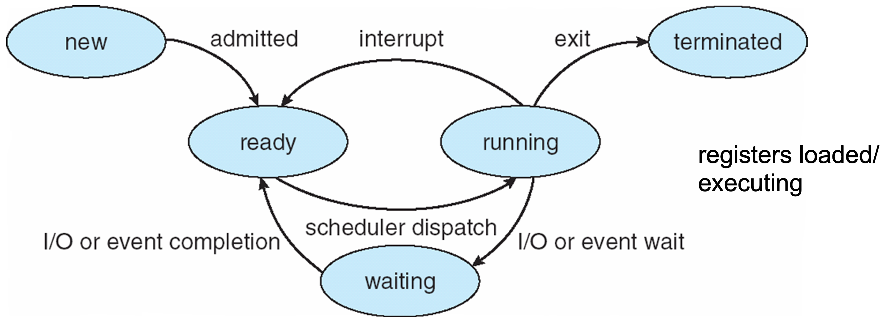</p> --- but there exist **many** processes in the system... --- but there exist **many** processes in the system... - if _one_ is <scb>running</scb>, what states are others in? --- - if _one_ is <scb>running</scb>, what states are others in? - **why** would a process go from <scb>running</scb> → <scb>waiting</scb>? Note: - example: running -> waiting on an I/O request (e.g. read from disk). --- ### <scb>xv6</scb> states ```C struct proc { ... // p->lock must be held when using these: enum procstate state; // Process state void *chan; // If non-zero, sleeping on chan int killed; // If non-zero, have been killed int xstate; // Exit status to be returned to parent's wait ... ``` --- ### <scb>xv6</scb> states ```C[4] struct proc { ... // p->lock must be held when using these: enum procstate state; // Process state void *chan; // If non-zero, sleeping on chan int killed; // If non-zero, have been killed int xstate; // Exit status to be returned to parent's wait ... ``` --- ### <scb>xv6</scb> states ```C[2,7] enum procstate { UNUSED, USED, SLEEPING, RUNNABLE, RUNNING, ZOMBIE }; struct proc { ... // p->lock must be held when using these: enum procstate state; // Process state void *chan; // If non-zero, sleeping on chan int killed; // If non-zero, have been killed int xstate; // Exit status to be returned to parent's wait ... --- ### <scb>xv6</scb> states ```C[2,7] enum procstate { UNUSED, USED, SLEEPING, RUNNABLE, RUNNING, ZOMBIE }; struct proc { ... // p->lock must be held when using these: enum procstate state; // Process state void *chan; // If non-zero, sleeping on chan int killed; // If non-zero, have been killed int xstate; // Exit status to be returned to parent's wait ... ``` **note** the subtle differences in names... |linux|xv6| |-----|-----| | ready | runnable | | waiting | sleeping | | --- ## process queues --- ## process queues | queue | description | |---|---| | **job queue** | **all** processes in system | --- ## process queues | queue | description | |---|---| | **job queue** | **all** processes in system | | **runqueue** | processes in **ready** state <br> waiting to execute; scheduler picks next | --- ## process queues | queue | description | |---|---| | **job queue** | **all** processes in system | | **runqueue** | processes in **ready** state <br> waiting to execute; scheduler picks next | | **device queues** | processes waiting for **i/o completion** <br> typically one queue per device | || --- ## process queues | queue | description | |---|---| | **job queue** | **all** processes in system | | **runqueue** | processes in **ready** state <br> waiting to execute; scheduler picks next | | **device queues** | processes waiting for **i/o completion** <br> typically one queue per device | || processes **migrate** between queues --- ## process queues processes **migrate** between queues <p>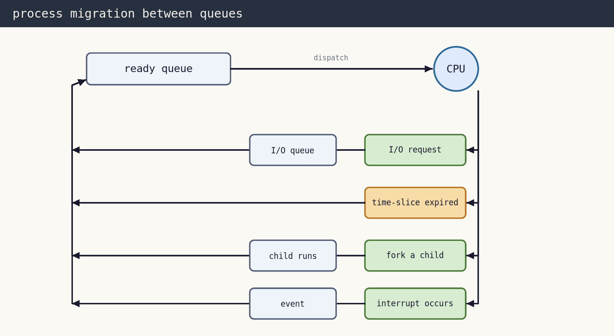</p> --- ## process scheduling --- ### process scheduling choose **which** process to run next, given... --- ### process scheduling choose **which** process to run next, given... - process **priority** (vs. other ready processes) - remaining **timeslice** (CPU allocation) --- ### process scheduling | **two types** --- ### process scheduling | **two types** | type | behavior | |------|----------| | **CPU bound** | most **time on CPU**, rarely waits for I/O | --- ### process scheduling | **two types** | type | behavior | |------|----------| | **CPU bound** | most **time on CPU**, rarely waits for I/O | | **I/O bound** | short CPU bursts, mostly **waiting on I/O** | || --- ### process scheduling | **examples** | type | examples | |------|----------| | **CPU bound** | computing pi, climate modeling, crypto mining | | **I/O bound** | X server (keyboard/mouse), web servers | || --- ### process scheduling - schedulers usually **prioritize I/O-bound** processes --- ### process scheduling - schedulers usually **prioritize I/O-bound** processes - just woke up for some I/O → **process it right away** <br> <br> ## why? --- so...what prevents... a single **CPU-bound** process from **monopolizing** CPU? --- ## timer interrupts --- ### timer interrupts - an interrupt from an _on-processor_ timekeeping device - e.g. <scb>100 Hz</scb> in Linux → every <scb>10 ms</scb> --- ### timer interrupts - an interrupt from an _on-processor_ timekeeping device - e.g. <scb>100 Hz</scb> in Linux → every <scb>10 ms</scb> - lets kernel **keep time** - track execution of different processes - schedule accordingly --- ### timer interrupts - an interrupt from an _on-processor_ timekeeping device - e.g. <scb>100 Hz</scb> in Linux → every <scb>10 ms</scb> - lets kernel **keep time** - track execution of different processes - schedule accordingly - **timeslice** → **multiple** of timer's "inter-arrival time" --- ### timer interrupts - an interrupt from an _on-processor_ timekeeping device - e.g. <scb>100 Hz</scb> in Linux → every <scb>10 ms</scb> - lets kernel **keep time** - track execution of different processes - schedule accordingly - **timeslice** → **multiple** of timer's "inter-arrival time" - **preempt** running thread → enables "**preemptive scheduling**" --- ### timer interrupts | **wall-clock time** --- ### timer interrupts | **wall-clock time** - timer interrupts are the kernel's **main** way to **keep time** --- ### timer interrupts | **wall-clock time** - timer interrupts are the kernel's **main** way to **keep time** - the clock on your screen → the OS _counting ticks_ - fine-grained; NTP servers correct the drift --- ## so what is...**scheduling**? --- ### so what is...**scheduling**? <div class="multicolumn" style="display: grid; grid-template-columns: 60% 40%; gap: 20px; align-items: center;"> <div> - imagine you have <scb>n</scb> cpu cores </div> <div> <p>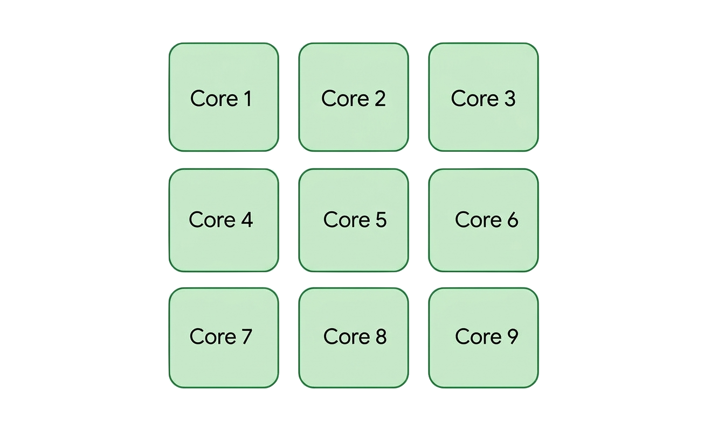</p> </div> </div> --- ### so what is...**scheduling**? <div class="multicolumn" style="display: grid; grid-template-columns: 60% 40%; gap: 20px; align-items: center;"> <div> - imagine you have <scb>n</scb> cpu cores - and <scb>m</scb> processes where <scb>m >> n</scb> </div> <div> <p>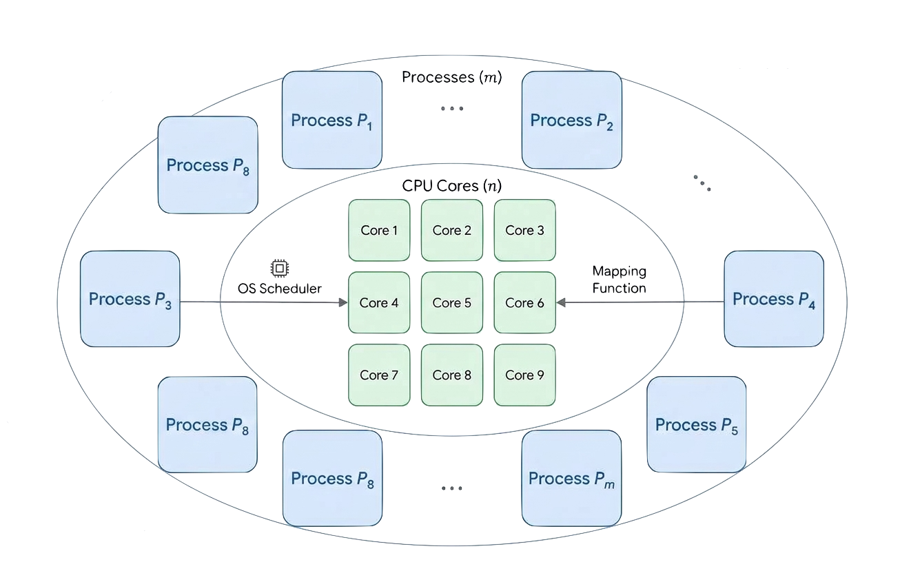</p> </div> </div> --- ## scheduling question | map <scb>m → n</scb>? --- ## scheduling question | map <scb>m → n</scb>? --- ### scheduling question | map <scb>m → n</scb>? <div class="multicolumn" style="display: grid; grid-template-columns: 60% 40%; gap: 20px; align-items: center;"> <div> - **<sc>n</sc> cores** → <scb>n</scb> _parallel_ sets of registers → n processes at once </div> <div> </div> </div> --- ### scheduling question | map <scb>m → n</scb>? <div class="multicolumn" style="display: grid; grid-template-columns: 60% 40%; gap: 20px; align-items: center;"> <div> - **<sc>n</sc> cores** → <scb>n</scb> _parallel_ sets of registers → n processes at once - but usually <scb>m >> n</scb> → far more processes than cores </div> <div> </div> </div> --- ### scheduling question | map <scb>m → n</scb>? <div class="multicolumn" style="display: grid; grid-template-columns: 60% 40%; gap: 20px; align-items: center;"> <div> - **<sc>n</sc> cores** → <scb>n</scb> _parallel_ sets of registers → n processes at once - but usually <scb>m >> n</scb> → far more processes than cores </div> <div> </div> </div> <br> <center><div class="center" data-id="box" style="height: 75px; width: 1150px; background: orange;"> <b>scheduler</b> decides → which process is next </div></center> --- ### scheduling question | map <scb>m → n</scb>? - <b>scheduler</b> decides → which process is next - **dispatches**/switches current process → next --- ### scheduling question | map <scb>m → n</scb>? - <b>scheduler</b> decides → which process is next - **dispatches**/switches current process → next - <scb>ready</scb> state → <scb>running</scb> state --- ### scheduling question | map <scb>m → n</scb>? - <b>scheduler</b> decides → which process is next - **dispatches**/switches current process → next - <scb>ready</scb> state → <scb>running</scb> state - **context switch** time is _overhead_ → **minimal** --- what is _involved_ in a context switch? --- what is _involved_ in a context switch? what must be **saved** and/or **restored**? --- what must be **saved** and/or **restored**? - registers for a process --- what must be **saved** and/or **restored**? - registers for a process - switch VAS from one process to another --- ## context switch --- ### context switch 1. save **outgoing** process state to its PCB 2. (re)load **incoming** one's state (from PCB) --- ### context switch 1. save **outgoing** process state to its PCB 2. (re)load **incoming** one's state (from PCB) <p>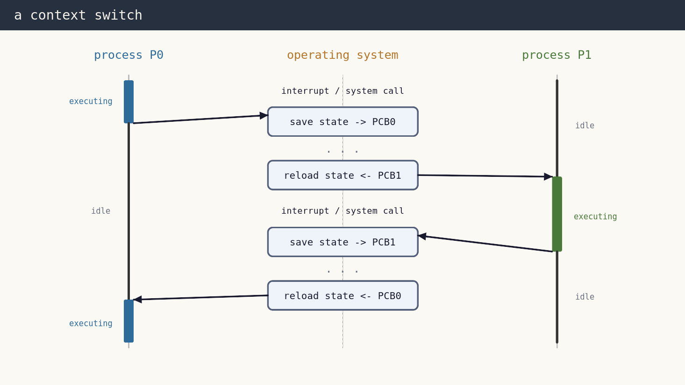</p> --- ### context switch while the OS switches, _both_ processes are briefly **idle** --- ### context switch while the OS switches, _both_ processes are briefly **idle** <br> <br> <center><div class="center" data-id="box" style="height: 75px; width: 450px; background: orange;"> <b>pure overhead!</b> </div> --- ## xv6 context switch --- ### xv6 context switch it's _"just structs, C and asm"_ → let's trace <scb>swtch.S</scb> --- ### xv6 context switch | **how we got here** - syscall → save **user** registers --- ### xv6 context switch | **how we got here** - syscall → save **user** registers - <scb>tf</scb> (trap frame) points at them --- ### xv6 context switch | **how we got here** - syscall → save **user** registers - <scb>tf</scb> (trap frame) points at them <p>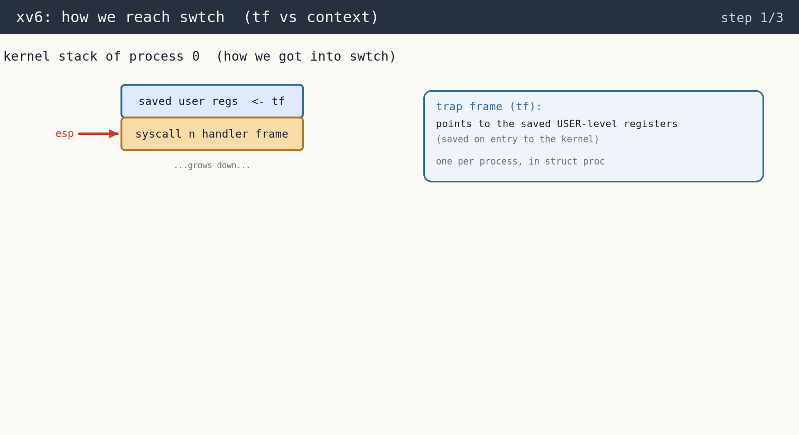</p> --- ### xv6 context switch | **how we got here** - handler blocks <br> <scb>wait_for_io</scb> → calls <scb>sched()</scb> → calls <scb>swtch()</scb> <p>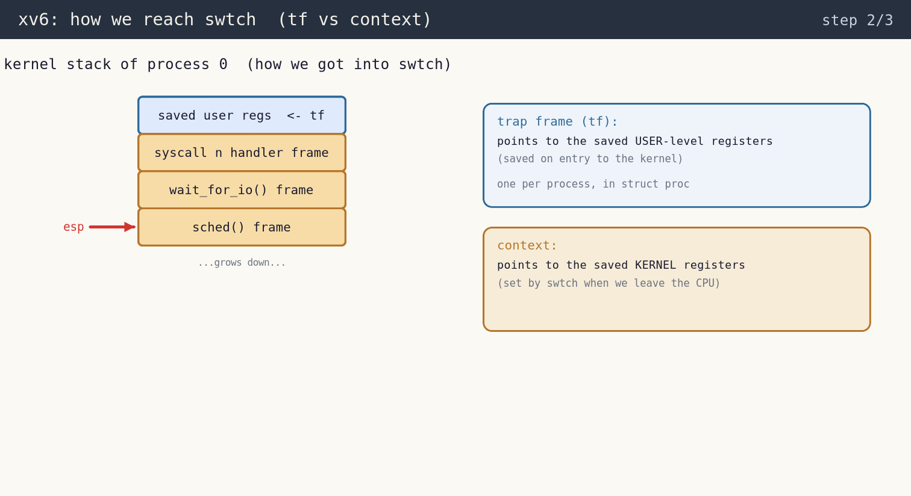</p> --- `void swtch(struct context **old, struct context *new);` --- ### xv6 context switch | **how we got here** <div class="multicolumn" style="display: grid; grid-template-columns: 60% 40%; gap: 20px; align-items: center;"> <div> two **different** register contexts ||| |----|----| | <scb>trap frame</scb> (<scb>tf</scb>) | user regs | | <scb>context</scb> | kernel regs | | </div> <div> </div> </div> --- two **different** register contexts ```C // Per-process state struct proc { ... struct trapframe *trapframe; // data page for trampoline.S struct context context; // swtch() here to run process ... }; ``` --- <scb>xv6/x86.h</scb> <p>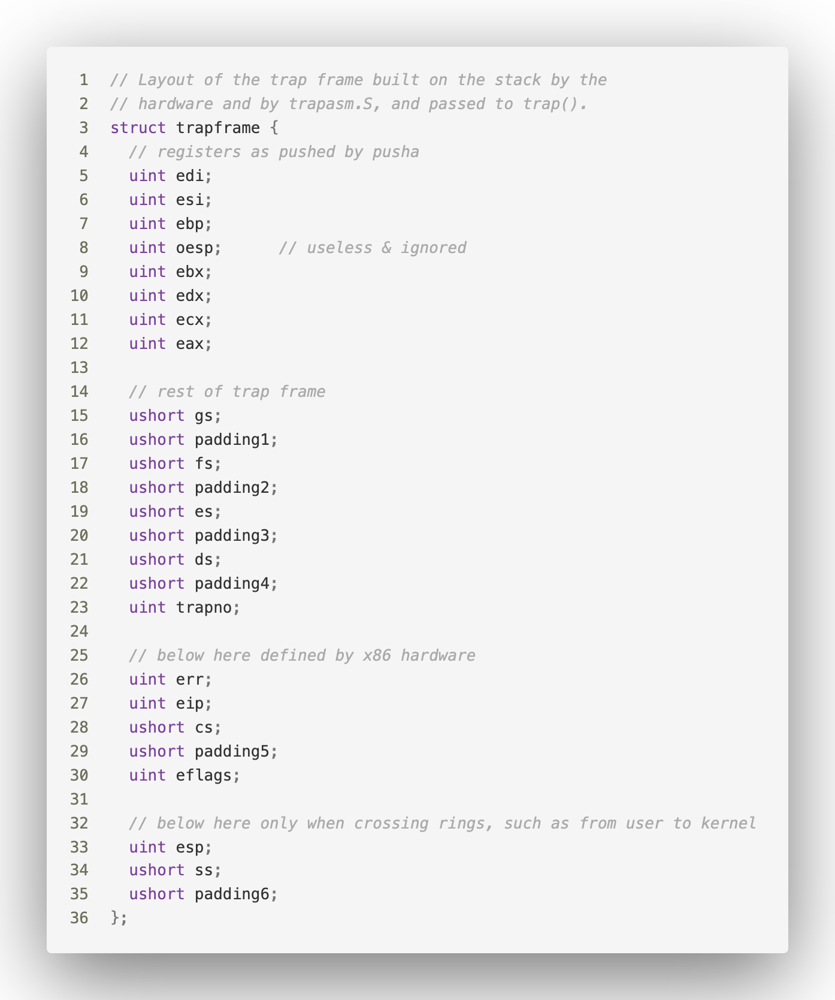</p> --- <scb>xv6/x86.h</scb> <div class="multicolumn" style="display: grid; grid-template-columns: 40% 60%; gap: 20px; align-items: center;"> <div> </div> <div> ```C struct trapframe { // registers as pushed by pusha uint edi; uint esi; uint ebp; uint oesp; // useless & ignored uint ebx; uint edx; uint ecx; uint eax; ``` </div> </div> --- <scb>xv6/x86.h</scb> <div class="multicolumn" style="display: grid; grid-template-columns: 40% 60%; gap: 20px; align-items: center;"> <div> </div> <div> ```C[3-10] struct trapframe { // registers as pushed by pusha uint edi; uint esi; uint ebp; uint oesp; // useless & ignored uint ebx; uint edx; uint ecx; uint eax; ``` </div> </div> --- ### xv6 context switch | **how we got here** <scb>context</scb> → only valid when process is **not running** <p>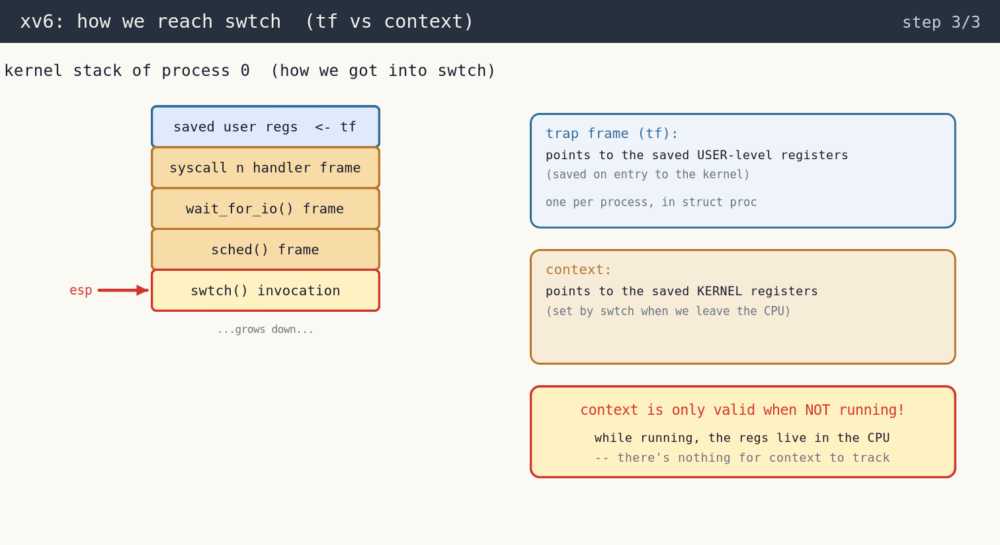</p> Note: - while running, the registers live in the CPU -- nothing for context to track. --- ### <scb>swtch.S</scb> <p>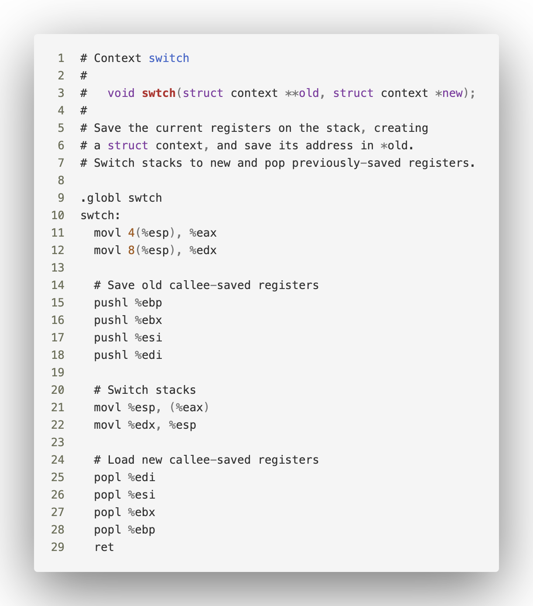</p> --- recall that there are **two** processes → <scb>P0</scb> and <scb>P1</scb> --- ### xv6 context switch | **mechanics** <scb>P0</scb> kernel stack → copy register by register <p>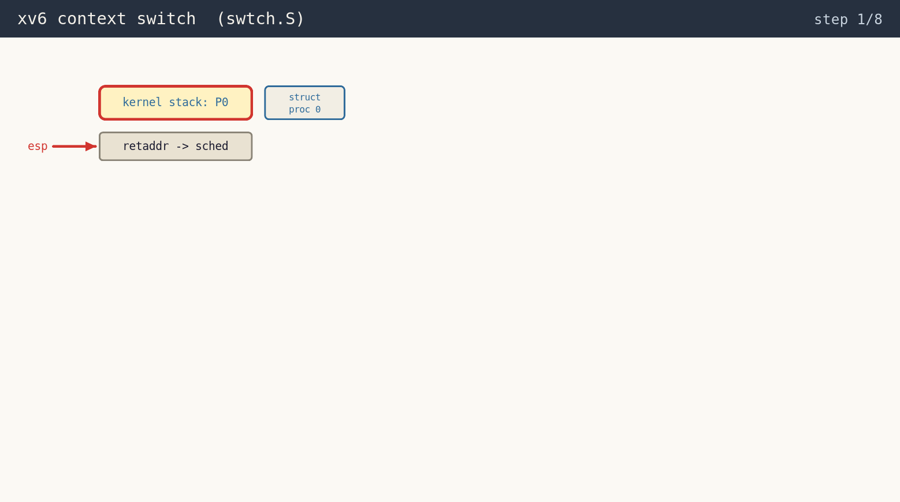</p> --- ### xv6 context switch | **mechanics** <scb>swtch(&curr->context, next->context)</scb> <br> save current, load next --- ### xv6 context switch | **mechanics** read the two args off the stack → <scb>%curr</scb>, <scb>%next</scb> <p>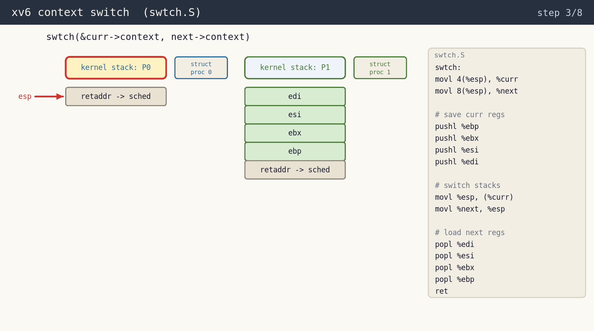</p> --- ### xv6 context switch | **mechanics** **save** callee-saved registers <scb>push ebp, ebx, esi, edi</scb> --- ### xv6 context switch | **mechanics** **save** callee-saved registers <scb>push ebp, ebx, esi, edi</scb> these four pushes build saved context on <scB>P0</scb>'s kernel stack --- ### xv6 context switch | **mechanics** stash old <scb>esp</scb> into <scb>curr->context</scb> <p>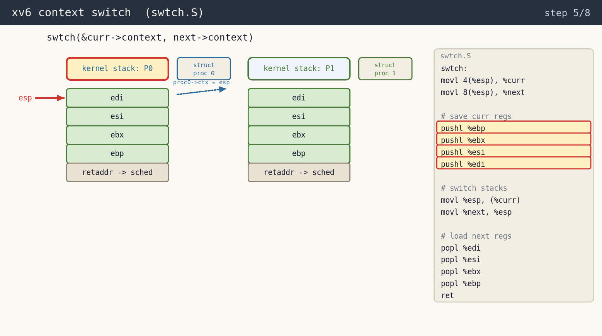</p> --- ### xv6 context switch | **mechanics** **switch stacks** load <scb>esp</scb> from <scb>next->context</scb> (now on <scb>P1</scb>!) <p>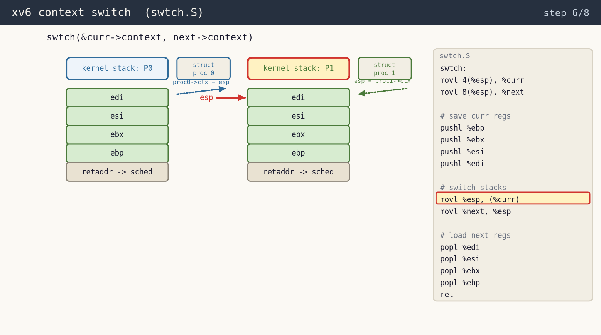</p> --- ### xv6 context switch | **mechanics** **switch stacks** load <scb>esp</scb> from <scb>next->context</scb> (now on <scb>P1</scb>!) one register move is entire "switch" → esp now points at <scb>P1</scb>'s stack --- ### xv6 context switch | **mechanics** **restore** <scb>P1</scb>'s registers <scb>pop edi, esi, ebx, ebp</scb> <p>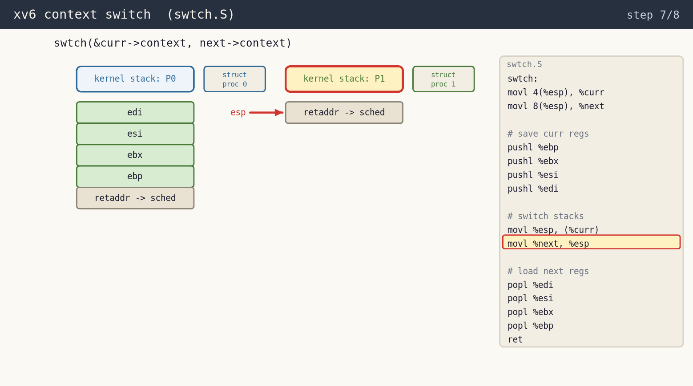</p> --- ### xv6 context switch | **mechanics** <scb>ret</scb> pops <scb>P1</scb>'s return address <p>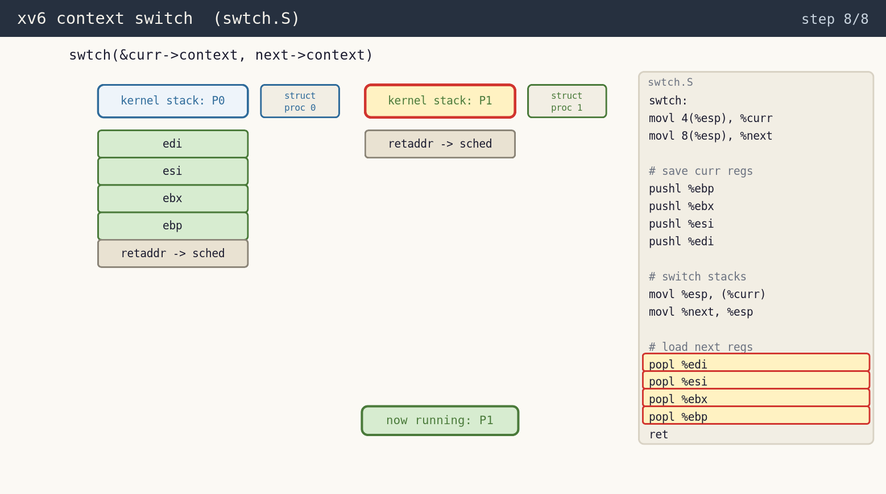</p> --- ### xv6 context switch | **mechanics** <scb>ret</scb> pops <scb>P1</scb>'s return address **now running <scb>P1</scb>!** --- ### xv6 context switch | **mechanics** <scb>ret</scb> pops <scb>P1</scb>'s return address **now running <scb>P1</scb>!** <scb>swtch</scb> returns onto a **different** stack than it was called on! --- ### xv6 context switch | **summary** |pre-switch|post-switch| |----------|-----------| ||| --- ### xv6 context switch | **summary** |pre-switch|post-switch| |----------|-----------| |<scb>P0</scb> stack active, wants to switch|| |<scb>P1</scb> picked to run next|| --- ### xv6 context switch | **summary** |pre-switch|post-switch| |----------|-----------| |<scb>P0</scb> stack active, wants to switch| <scb>P0</scb> stack and context ready to be switched **back** | |<scb>P1</scb> picked to run next| <scb>P1</scb> stack active, registers restored | || --- ### xv6 context switch | **summary** |pre-switch|post-switch| |----------|-----------| |<scb>P0</scb> stack active, wants to switch| <scb>P0</scb> stack and context ready to be switched **back** | |<scb>P1</scb> picked to run next| <scb>P1</scb> stack active, registers restored | || **context** → active only when process is **not** running --- ## process summary --- ### process summary - an **abstraction** for computation and memory --- ### process summary - an **abstraction** for computation and memory - implemented _without magic_ - → just **structs, C, and asm** --- ### process summary - an **abstraction** for computation and memory - implemented _without magic_ - → just **structs, C, and asm** <br> **next class** → UNIX APIs for processes & communication